01Arrival
Scout Atlas · Passenger Coupon · Not transferable
Seven days
out of Athens
ATH
ATH
Season
Aug 2026
Nights
2.5 + 4
Bases
Two, max
Issued
13 AUG 26

Route advisory
Read before booking
Two and a half days in Athens — the 08:00 Acropolis slot[1], the Acropolis Museum[2] and the Ancient Agora[3] — then one base for the remaining four nights, not two. Each island change eats most of a day, and Cycladic guidance wants three nights per island minimum[14]. Naxos is the default[4]; a Nafplio-based Peloponnese loop is the better call if you want ruins and a car[5]. The real question is not which island but how much ferry risk you are willing to hold.
Route A · The default
Athens + Naxos · one boat out, one boat backScroll the strip →
Foot· · · · ·
02The rock
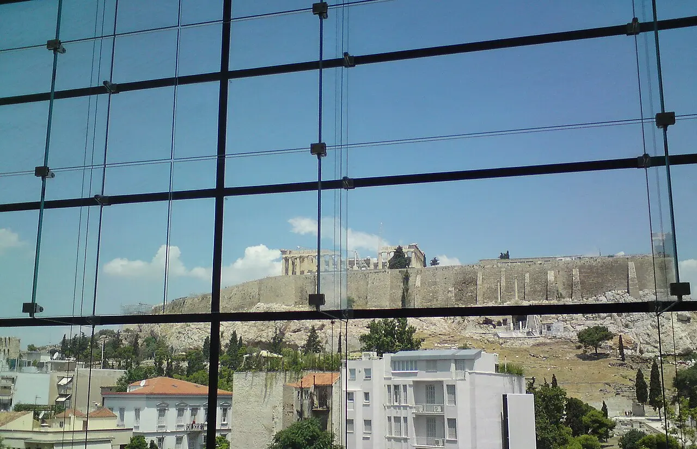
Athens
Acropolis at 08:00
- 07:45 At the gate. The timed ticket books the gate, not the 15–30 min security line[30]
- 08:00 Slot €30 on hhticket.gr, no booking fee; 3,000 of the day's 20,000 enter this hour[28]
- 10:30 Down the south slope past the Theatre of Dionysus — already paid for[1]
- 12:00 Acropolis Museum €20 through the heat; Friday it runs to 22:00[2]
- 21:00 Psyrri grill row, then one rooftop[39]
Sleep · Koukaki€50
Foot· · · · ·
03Agora → sea
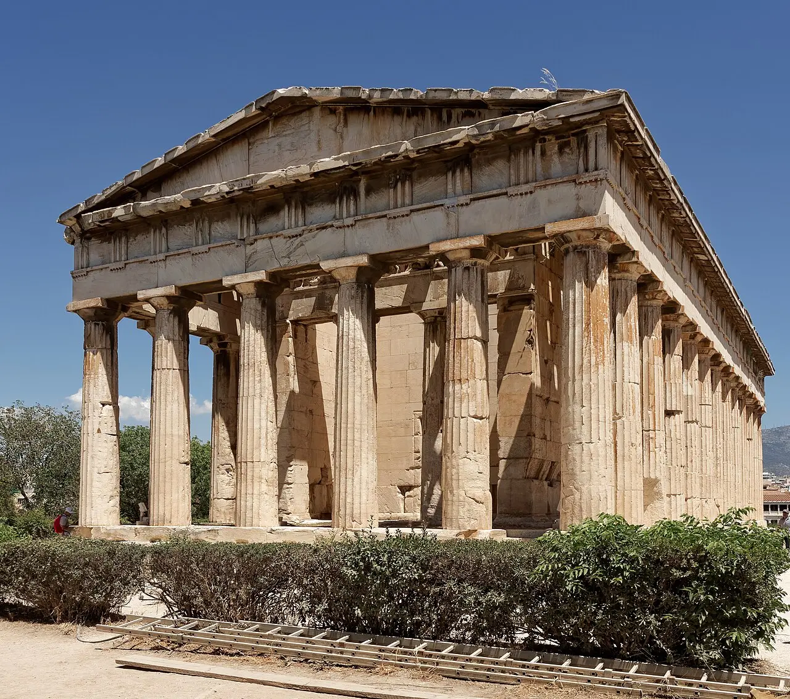
Athens · half day
Agora, then the boat
- 08:00 Ancient Agora €20, site + museum — best value after the rock[3][9]
- 11:00 Cook-house lunch inside Varvakios Agora, Mon–Sat 07:00–18:00[37]
- 13:00 Bags, then Metro L3 to Piraeus — 50–60 min[21]
- 14:30 Gate E6/E7 for the Cyclades; be there 60–90 min early[23][22]
Sleep · Naxos€20
04Chora

Naxos
Portara at sunset
- AM Take the earliest sailing you can — the meltemi builds through the morning and peaks in the afternoon[8]
- PM The Venetian Kastro and the old town on foot[4]
- 20:30 Portara, the marble doorway on the islet[4]
- — Rooms €80–150 here against €150–280 on Santorini[19]
Sleep · Naxos€42
On foot· · · · ·
05Sand

Bus/car· · · · ·
06Marble
07Buffer
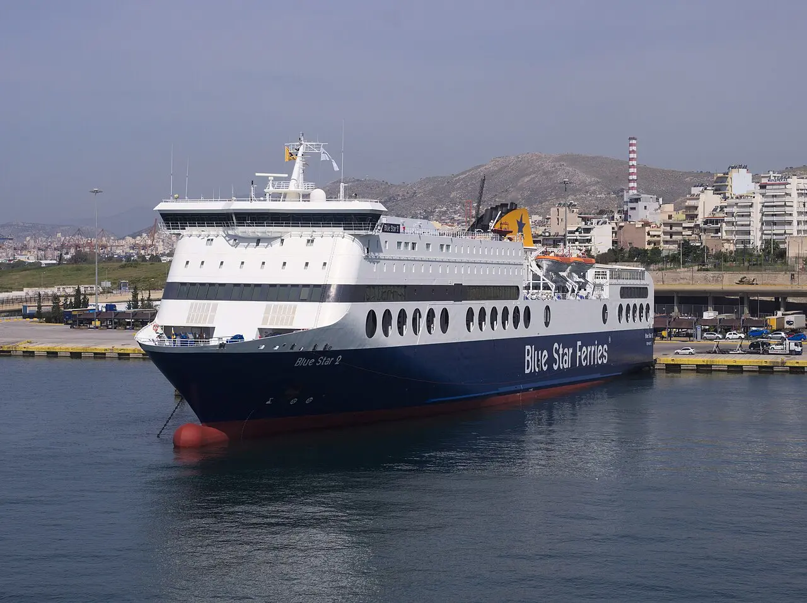
Naxos → Athens
The day that saves the trip
- AM Morning boat back. Prefer the big vehicle-carrying hull over a catamaran on an exposed leg[60]
- PM Metro back into town, or straight out to an airport hotel[21]
- ⚠ Never put the return leg on the day of the flight home — a weather cancellation makes you a no-show and nobody pays[26]
Sleep · near ATH€42
▲Departure
Fly home from ATHThe spare day is not slack. It is the whole insurance policy against a cancelled sailing.[8]
Route A endsATH
One compromise
The afternoon sailing on day 3
Every ferry source says the same thing: take the earliest departure, because afternoon crossings sit in the meltemi peak[8][60]. Route A spends a half-day on the Agora first and pays for it with a midday boat. If the forecast is bad, invert it — 07:00 sailing, Agora dropped — because the Agora will still be there and the Beaufort 7 afternoon will not wait.
Route B · No boat at all
Athens + a Peloponnese loop by car · nothing to cancel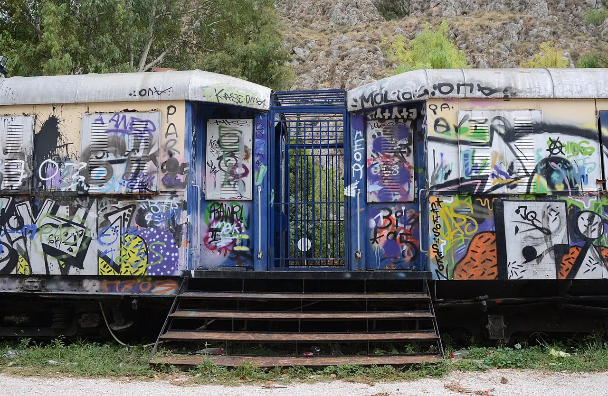
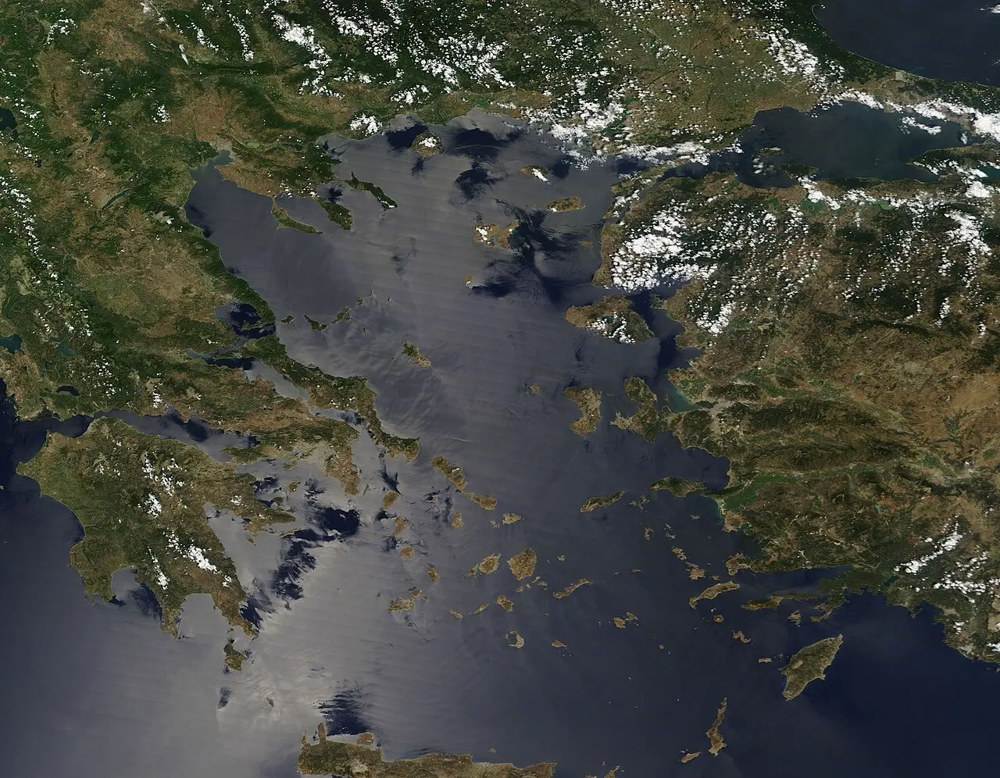
1–2Athens
03Argolid
04Theatre
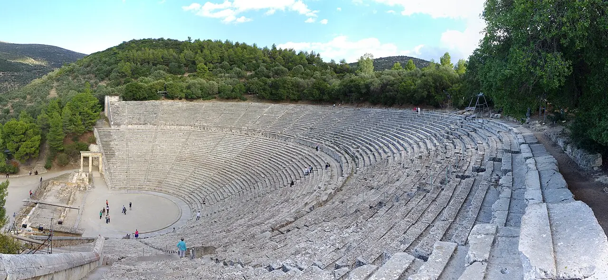
Nafplio
Epidaurus at 08:00
- 08:00 Epidaurus €12, opens at 08:00 and bakes by 11:00[72]
- 12:00 Swim at Karathona, then the old town[43]
- 21:00 Fri/Sat in August: live tragedy in the theatre itself — Lysistrata 21–22 Aug, Ion 28–29 Aug[46]
Sleep · Nafplio€12
05Byzantium
06Mani
07Return
Route C · Two islands, legally
The Saronic — the only cluster where a four-day hop is not a trap1–2Athens
03Hydra
Feet· · · ·
04Car-free
5–6Spetses
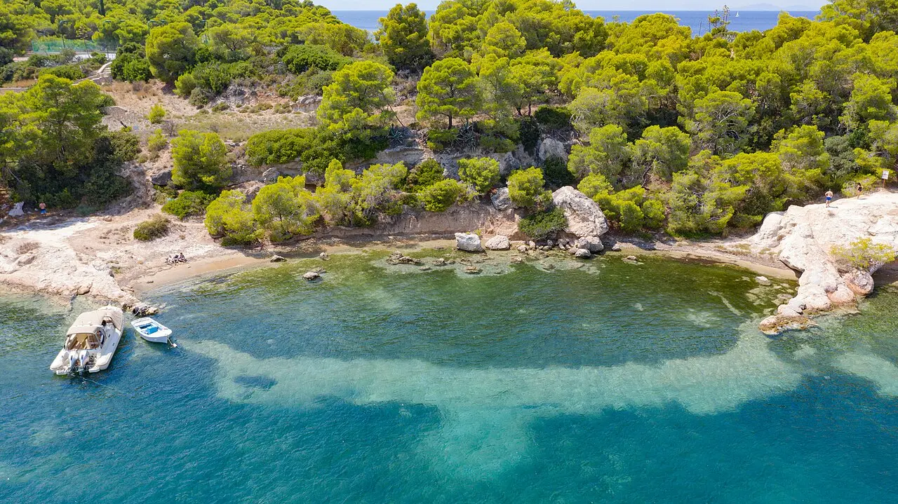
Spetses
The second island
- — The hop is 30–60 minutes in sheltered water: two islands in four days works here and nowhere else[15]
- ⚠ There is no direct Hydra–Aegina sailing; the chain is Aegina → Poros → Hydra → Spetses[15]
- — Cost of this route: you spend your Hydra day trip as a base instead[16]
Sleep · Spetses ×2€18
07Return
Departures · Piraeus
2026 fares, one way, from| Crossing | Duration | From |
|---|---|---|
| Aegina | 30 min – 1 h 30 | €9.50 |
| Hydra | 1 – 2 h | €15 |
| Milos | 2 h 30 – 7 h 30 | €33 |
| Paros | 2 h 45 – 5 h | €40.50 |
| Naxos — Route A | 3 h 15 – 6 h | €42 |
| Mykonos | 2 h 40 – 6 h | €43 |
| Santorini | 3 h 55 – 8 h | €39 |
| Heraklion, Crete | 7 – 13 h | €27.50 |
| Rhodes | 12 – 22 h | €46.50 |
All fares and durations from Ferryhopper's Piraeus board for 2026[20]. Gates: E1 Santorini/Crete/Dodecanese, E6–E7 Cyclades, E9 Saronic high-speeds — your gate is printed on the ticket[23][22]. Coming off an international flight, allow ≥5 h to a Piraeus sailing and ≥4 h to Rafina — the airport KTEL reaches Rafina in ~30 min for €4–5.50 cash[24][25]. Blue Star web check-in opens 48 h and closes 2 h before departure[63].
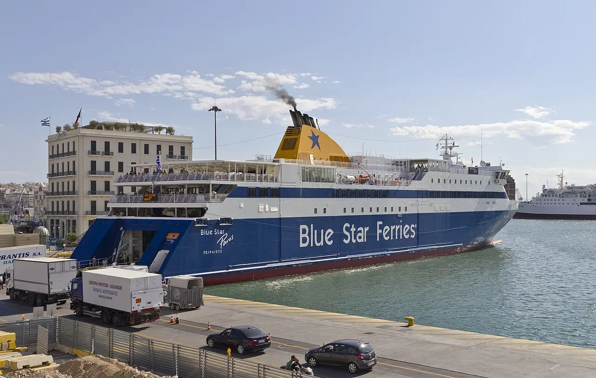
Tickets & crossings
Per person, fixed costs only — no beds, no foodRoute A
Athens + Naxos
- Metro L3, airport → city[21]€9.00
- Acropolis + slopes[1]€30.00
- Acropolis Museum[2]€20.00
- Ancient Agora + museum[3]€20.00
- Piraeus → Naxos[20]€42.00
- Naxos → Piraeus[20]€42.00
Total€163.00
Beds on top: €80–150/night mid-tier island, against €150–280 on Santorini or Mykonos[19].
Route B
Athens + Peloponnese
- Acropolis + slopes[1]€30.00
- Acropolis Museum[2]€20.00
- Ancient Agora[3]€20.00
- Ancient Corinth[47]€8.00
- Mycenae[47]€12.00
- Epidaurus[47]€12.00
- Mystras[45]€20.00
Admissions€122.00
Plus the car: €50–100/day in August, €5–12/day zero-excess, petrol ~€2.00–2.10/L[51], and tolls of €13.80–19.50 Athens–Corinth plus ~€11.75 Corinth–Kalamata[50]. Rooms €80–150[19].
What the reform cost you
Athens admissions, 2026
- Old five-day combined ticket[61]abolished
- Same seven sites, bought separately[9]~€105
- National Archaeological Museum[32]€12 → €20
- Temple of Olympian Zeus[9]€20, skip
- Kerameikos[10]closed
- Odeon of Herodes Atticus[11]closed 3 yr
Buy three€70.00
Acropolis + Acropolis Museum + Ancient Agora. Everything else in Athens is discretionary[9].
Open-dated coupons
If you keep an Athens base and have one spare day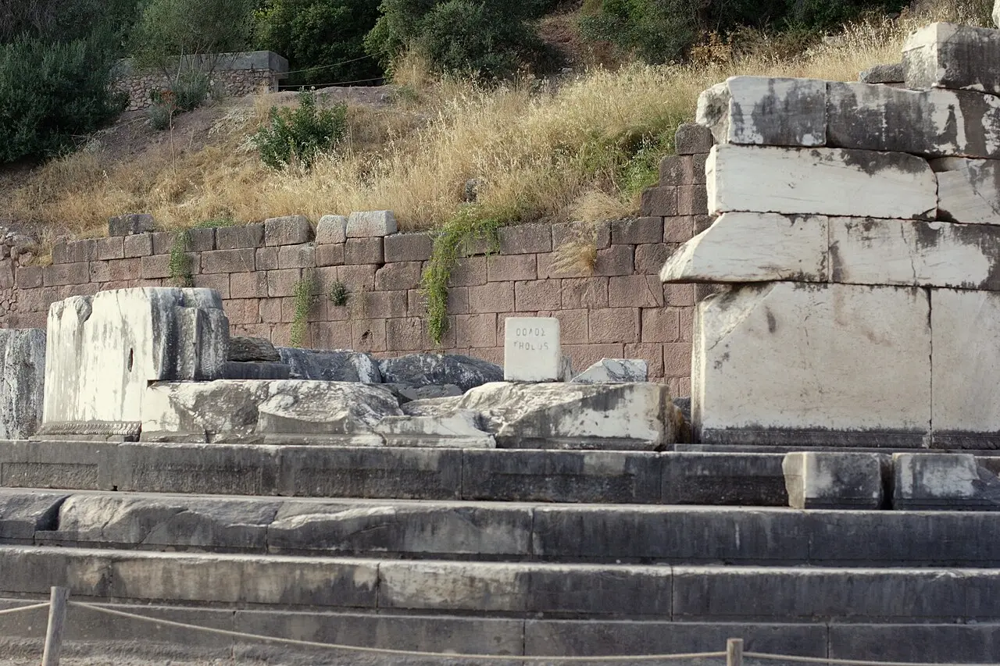
Delphi, if you want ruins
Organised coach 2 h 30 each way, 8–10 h door to door, entry included — often cheaper than doing it yourself.[54] At 600 m it is cooler than any Attic field. €33–84 · best ruins day
Meal coupons
Athens rewards the cheap end hardest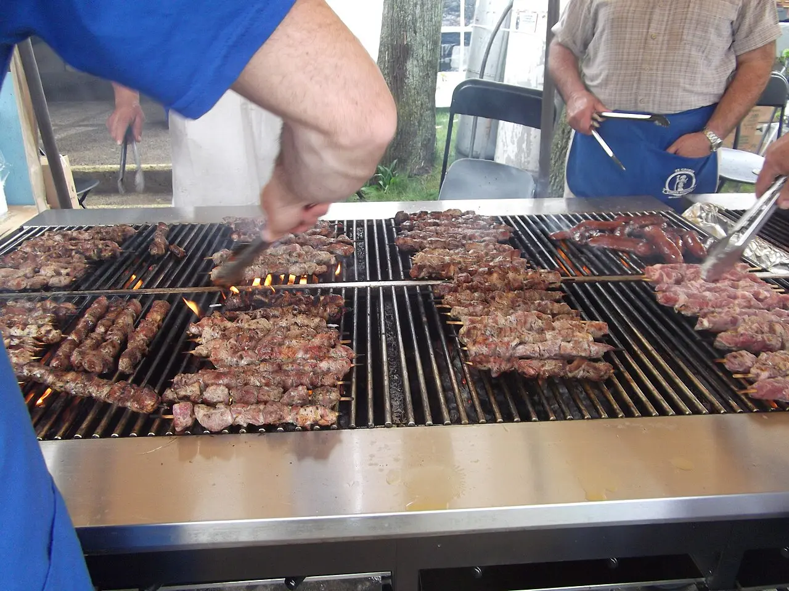
Kostas, Plaka
Pork souvlaki, cash only, closes at 3–4pm when the meat runs out. O Thanasis has been grilling kebab on Mitropoleos since 1964; Elvis in Psyrri is still going at 3am.[36] €3.50 · before 15:00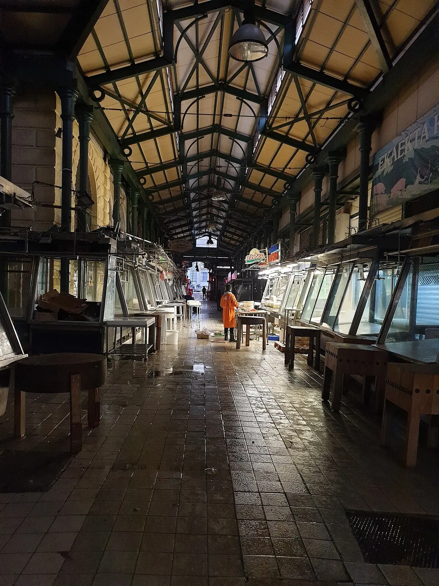
Varvakios Agora
Athinas St, since 1886: 100+ butcher stalls, 150 fish stalls, Mon–Sat 07:00–18:00, with cook-house tavernas inside.[37] Free to walk · lunch inside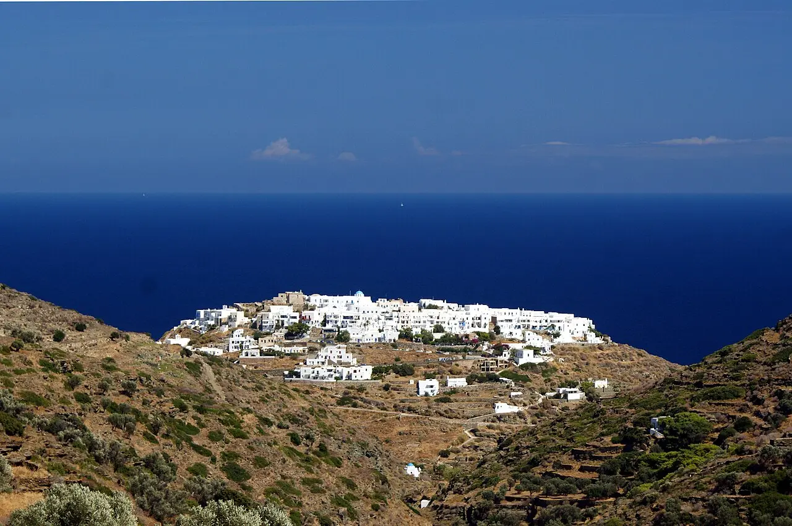
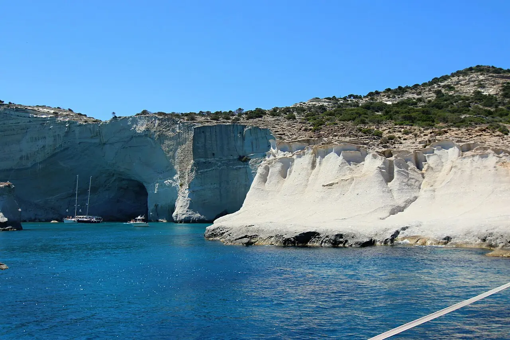
If the coastline is the point, Milos
Kleftiko is boat-only — €35–50 for a full-day tour from Adamas — and most south-coast beaches need a car or an ATV.[40] €33 from PiraeusConditions of carriage
The small print that actually bites§1 · Wind
The meltemi blows June–September and peaks in July–August at 7–8 Beaufort, occasionally over 120 km/h. It strengthens mid-morning, eases by sunset, and runs in spells of up to a week; Mykonos, Tinos and Andros take the worst of it.[6] Small catamarans cancel first; large Blue Star hulls hold out longer.[8]§2 · Heat
There is no published temperature threshold — the Culture Ministry decides day by day and announces in the morning. In the 18–22 July 2026 heatwave (40–43 °C) it shut the Acropolis roughly midday to 17:00, and August 2026 is forecast hotter than July. Alerts come via EMY and the 112 system.[29] An 11:00 or 13:00 slot is the one booking that can be cancelled out from under you.§3 · Cancellation
EU Regulation 1177/2010 gives you reimbursement within seven days or re-routing at no extra cost. Weather is an extraordinary circumstance, so the operator owes you the fare or a seat — not your hotel, and not your missed flight.[26] Refunds are not automatic: request one and keep the notice.[27]§4 · Booking window
Book 2–3 months ahead for a July/August crossing, 3–4 months for a cabin or a car slot — cabins vanish first and fares do not surge like airfares.[17] Blue Star deck seats rarely sell out; SeaJets seats and vehicle spaces routinely do.[27] Booking this month means the Naxos recommendation is only as good as its remaining availability.§5 · 15 August
Dekapentavgoustos is Greece's biggest domestic travel day: ports pack, ferries sell out outright, timetables shift, and Tinos absorbs thousands of pilgrims.[18] If your tail straddles that date, book weeks ahead or route around it. The Acropolis itself stays open — 15 August is a normal open day.[1]§6 · Tickets
A timed Acropolis ticket is valid from 15 minutes before to 15 minutes after its slot, and the old five-day combined ticket no longer exists.[61] No ticket type bypasses the security screening.[30]§7 · Shut this summer
Kerameikos has been closed since 5 May 2025, "till further announcement".[10] The Odeon of Herodes Atticus played its farewell season in June 2026 and closes for at least three years — there is no Herodeon concert this summer.[11][67]Not valid for travel
Six coupons this week cannot honour
Void
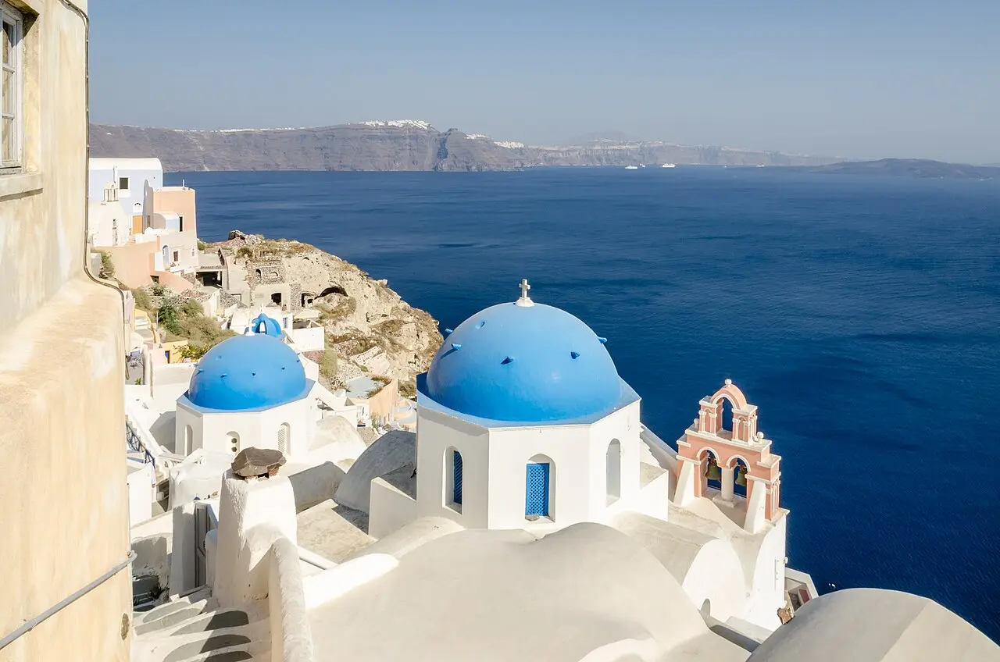
Void

Meteora as a day trip
The direct Athens–Kalambaka train is suspended until late 2026/mid-2027; what is left is a 4 h 30 coach each way at €54 — nine hours of transit before you see anything, and the monasteries shut by 15:00–17:00. "I personally wouldn't do it… it's a LONG day!"[52] Meteora is an overnight, not a day trip.
Void
Void
One night per island
Cycladic guidance is three nights per island minimum[14], and the Cyclades run on two effectively separate ferry lines, so islands 40 km apart can be a long cross-line connection[60]. On a seven-night trip, budget one full day per island change: two islands is the honest maximum.
Void
Void
Temple of Olympian Zeus at €20
Fifteen columns, no shade, twenty minutes — and the whole thing is visible from the perimeter fence for nothing. Walk past it to Hadrian's Arch instead[9].
Connecting services
Six angles behind this wallchartLeg 01 · expedition
Athens non-negotiables: the summer 2026 field manual
Book the 08:00 Acropolis slot, pair it with the Acropolis Museum and the Ancient Agora, and treat almost everything else as optional.
Leg 02 · expedition
After Athens: island clusters compared for a 3–5 day tail
One Cyclades island beats any two-island hop; the Saronic is the only cluster where two islands in four days is not a trap.
Leg 03 · survey
Ferries, ports and when to fly instead
Piraeus, Rafina or Lavrio, conventional ferry or catamaran, and the small set of legs where a domestic flight actually beats the boat.
Leg 04 · survey
The mainland tail: a Peloponnese loop and/or Meteora
Cheaper and emptier than the Cyclades in August, but far hotter and far more driving — with the routed 5-night version.
Leg 05 · survey
Day trips without changing base
One spare day in August: the early hydrofoil to Hydra, or Delphi for antiquity — and skip Meteora and the three-island cruise.
Leg 06 · recon
Eating and drinking in Athens and the islands
Souvlaki row, one mezedopoleio dinner and one rooftop; skip the starred night unless you want it.